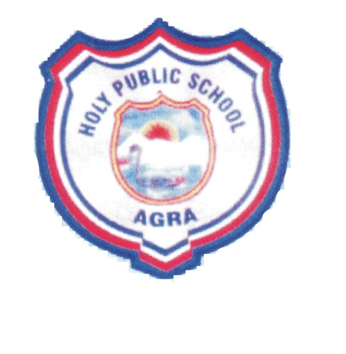
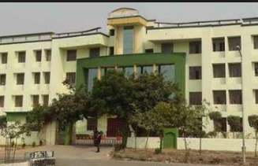

|  | Holy Public School | |||
| HOME | ABOUT US | STUDENTS | STAFF | CONTACT US |
| ADMISSIONS | WELCOME TO HOLY PUBLIC SCHOOL Situated on the side of NH-2 on Sikandra Road Holy public School is a school that every child dreams of A Big campus with U shaped academic building and very big open space for sports and games. The school has very well equipped laboratories for physics, chemistry, biology, computer lab.Maths lab, language lab, music room, SUPW room and a very big spectacular auditorium with a sitting, capacity of over 1000 people. The school provides sick room facility to the children where they are given the first aid and the basic treatment to small and non serious ailments. The school was established in the year 1979 The school was established in the year 1979. Affiliated to Central Board of Secondary Education, New Delhi (CBSE) the school has classes V to XII. The school boosts of strength of 2500 students. Refurbishment of building and adding up to the facilities has established this school, as a school with unbeatable infrastructure. Steps have been taken to give the best of equipments and ensuring safety in the labs. Sports facilities like Taekwondo, Table Tennis, Boxing Ring, Basketball, Volleyball and Badminton courts have been provided to ensure that our students have a healthy mind within a healthy body. We have a big ground to accommodate all our students during mass assembly. Our class X and XII examination result are showing improvement by every year. Our list of achievements has kept on swelling as our students have kept on adding one after another laurel to our list. Whether it be cultural activities or sports or any Co-curricular our students excel in all the fields. The Computer lab senior, Junior has been revamped and the students have an easy access to the computers. The facility of the Resource room is also there. |
|||
| HOSTEL | ||||
| GALLERY | ||||
| CURRCULAM | ||||
| DOWNLOADS | ||||